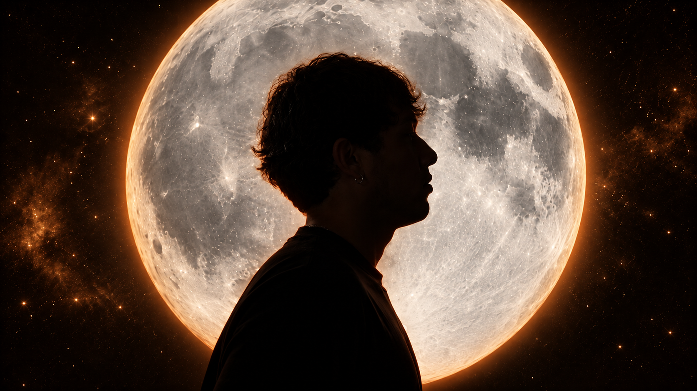
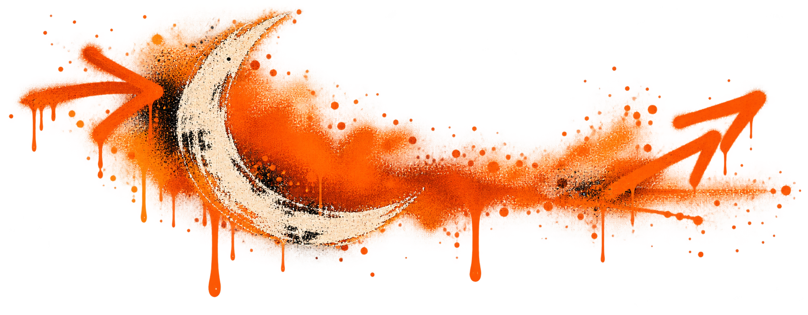

Temporada 01 · Señal naranja
Productora de contenido con cabeza creativa
Películas, traducción cinematográfica, edición, web, identidad de marca y piezas con IA. Proyectos propios y producción para quien quiera rodar con equipo completo.